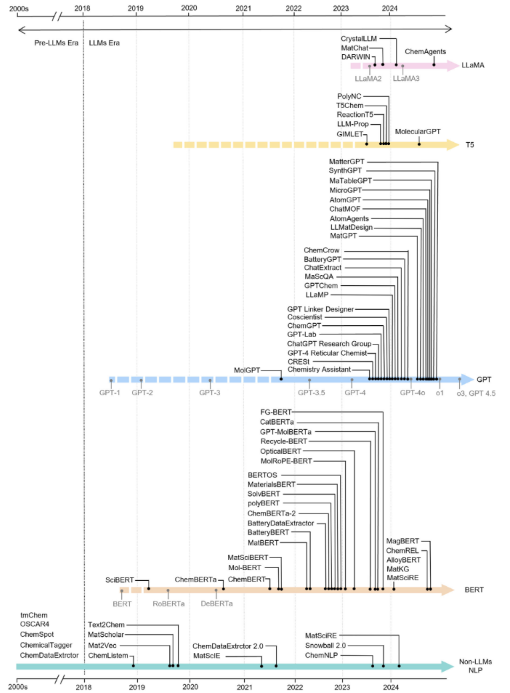
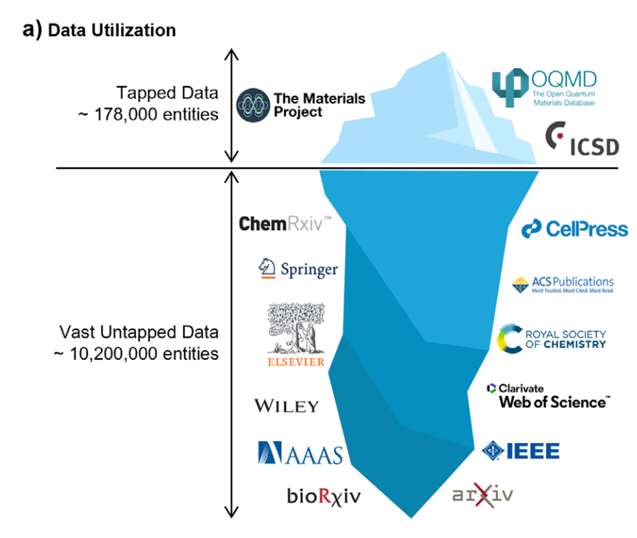
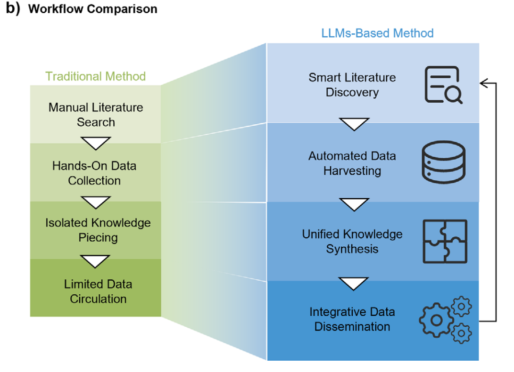
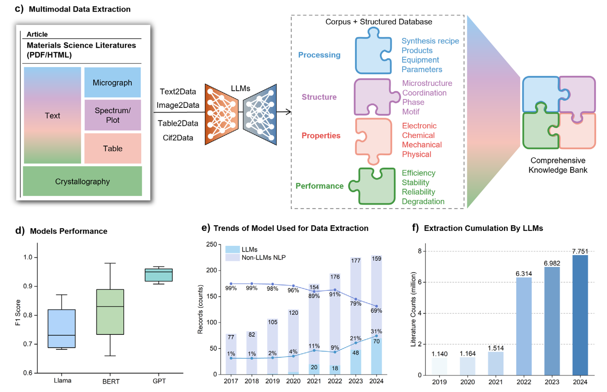
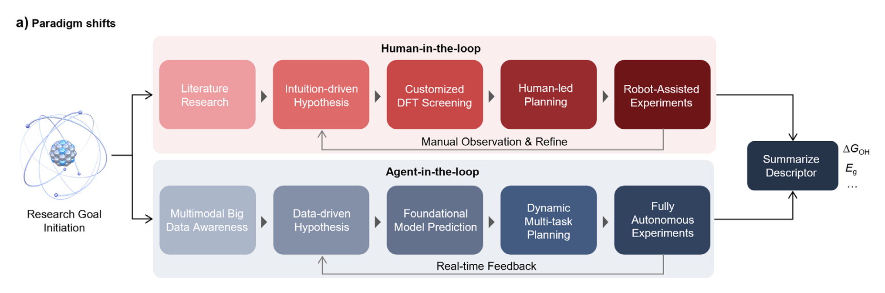
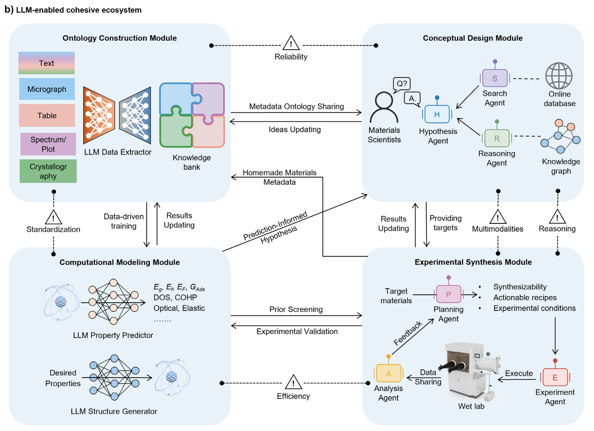
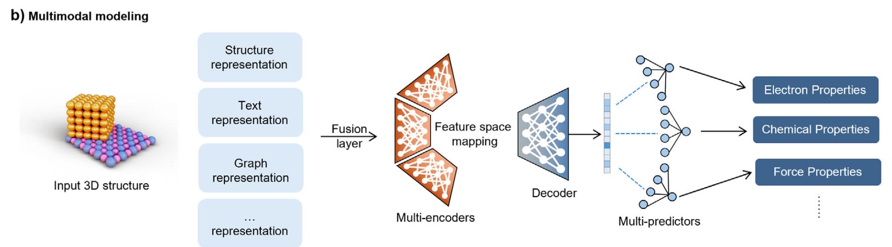
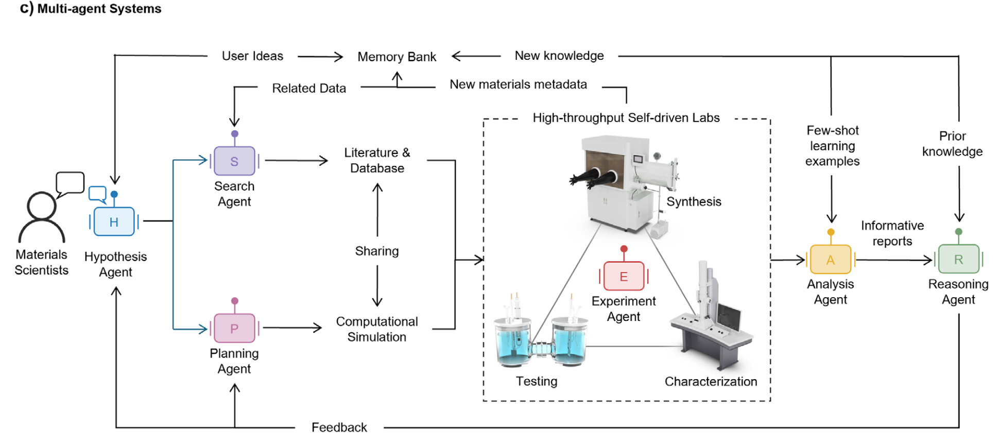
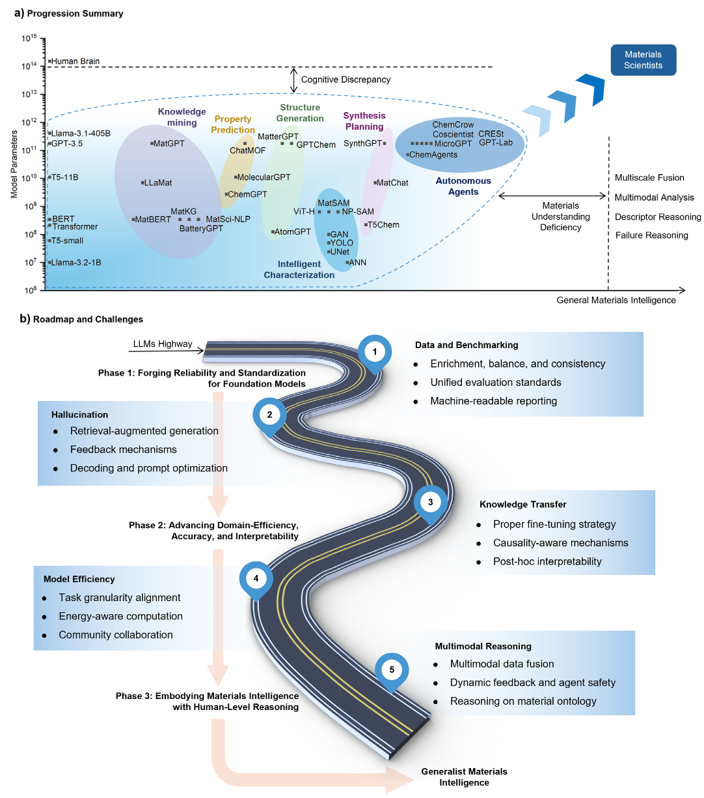
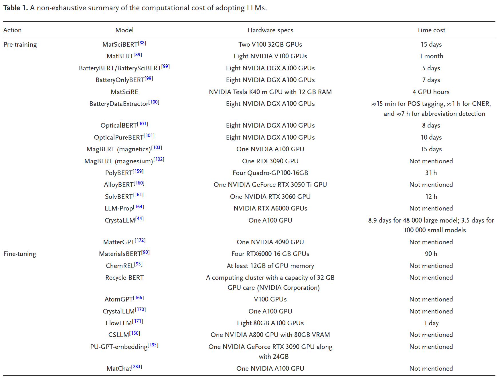

人工智能的浪潮，正以前所未有的力量席卷科研的各个角落。材料科学，这个关乎物质创新与应用的核心领域，也迎来了属于自己的“AI时刻”。传统材料研发依赖大量实验试错和科研人员经验的模式，正面临着效率瓶颈和知识获取的挑战。大型语言模型的崛起，为打破这些瓶颈、实现更高效、更智能的材料发现与设计，提供了前所未有的机遇。近期康奈尔大学尤峰崎团队发表的一篇的综述性论文，系统描绘了LLM如何赋能“通用材料智能”（Generalist Materials Intelligence, GMI）这一宏大愿景，并指出了实现路径上的关键挑战与解决思路。
摘要：大型语言模型正在指导多面手材料智能（GMI）的发展，GMI是一个整合了概念推理、计算建模和实验验证的统一框架。该框架的核心是循环中的代理范式，其中基于LLM的代理充当动态编排器，综合多模态知识、专业模型和实验机器人，以实现完全自主的发现。通过对LLM在材料科学代表性应用中的变革性影响的全面回顾，包括数据提取、性能预测、结构生成、综合规划和自驱动实验室，本研究强调了LLM如何彻底改变传统任务，催化循环中的代理范式，并弥合本体概念计算实验连续体。然后讨论了扩大LLM采用的独特挑战，特别是基础LLM与材料特定知识不一致所带来的挑战，强调在追求GMI的过程中需要提高适应性、效率、可持续性、可解释性和可信度。尽管如此，重要的是要认识到LLM并不是普遍有效的。他们的大量资源需求和不一致的性能要求在证明任务适用性的基础上进行谨慎部署。为了应对这些现实，提出了可操作的策略和渐进的路线图，以便在现实世界的实践中公平民主地实施具有材料意识的LLM。

为材料科学量身定制的大型语言模型（LLM）的非详尽进展，伴随着每个主流系列中发布的关键模型的里程碑。
核心挑战：材料科学研发的“痛点”在哪里？
在深入探讨LLM带来的解决方案之前，我们首先需要理解当前材料科学研发面临的几个核心“痛点”：
- “数据冰山”下的知识困境：海量的材料科学文献中蕴藏着丰富的实验数据、结构信息和合成方法，但绝大多数信息以非结构化形式存在，如同冰山水面之下的巨大体量，难以被有效利用和整合。结构化数据库（如Materials Project, OQMD等）虽已取得显著进展，但与文献中的潜在数据相比仍有巨大差距。

冰山隐喻说明了未开发和已开发材料数据之间的差异。虽然像MP这样的数据库积极管理材料结构，但材料文献中的绝大多数潜在数据仍未得到充分利用，这意味着差距超过50倍。
- 研发流程的“碎片化”：从概念提出、理论计算、实验验证到性能表征，材料研发的各个环节往往是孤立的，缺乏高效的协同和信息流动。
- 传统优化方法的局限：无论是“一次只改一个因素”（OFAT）还是传统的实验设计（DoE），在面对高维、复杂的材料参数空间时，都显得效率低下，且难以捕捉变量间的非线性相互作用。

传统方法与基于LLM的工作流的比较。
- 领域知识与通用AI的“鸿沟”：通用的LLM虽然强大，但其预训练数据主要来源于通用文本，与材料科学高度专业化的术语、概念和物理化学规律之间存在“理解偏差”。
LLM提出的新思路与方法：迈向“通用材料智能”（GMI）

c） LLM促进的多模态数据提取将文本、表格、显微照片、光谱数据和晶体学文件中的信息整合到一个统一的框架中，支持知识图构建等数据挖掘应用。d）方框图比较了各种LLM系列（Llama、BERT和GPT）在数据提取任务中的F1得分，展示了三种主流LLM系列的性能差异。统计数据来源于表S6，支持信息。e）多年来，LLM在材料数据提取中的使用统计数据显示，采用率迅速上升，从2020年的4%上升到2024年的31%，表明正在向基于LLM的方法转变。统计数据来源于Web of Science，[80]详细的查询方法见注释S1，支持信息。f）非详尽的统计数据表明，LLM驱动的模型已经处理了770万篇文献，反映了它们在挖掘未开发材料数据方面的可扩展性。统计数据也来自表S6“支持信息”。
面对上述挑战，该综述论文提出了一个核心愿景——通用材料智能（GMI），即构建一个能够统一概念推理、计算建模和实验验证的自适应智能框架。而大型语言模型（LLM）被认为是实现这一愿景的关键驱动力。LLM不仅仅是单一任务的工具，更被定位为整个智能体系的“协调者”和“智能骨干”。
以下是LLM为解决上述痛点、实现GMI所带来的关键新方法和思路：
1. 规模化、多模态的材料知识获取与本体构建 (解决“数据冰山”与“知识鸿沟”)
- 从文本到多模态信息提取：LLM（特别是多模态LLM，即MLLM，如GPT-4V）正在彻底改变从文献中提取信息的方式。它们不仅能处理文本，还能理解和解析图像（如显微照片、光谱图）、表格和晶体学文件中的信息，实现对材料数据的全面“扫荡”。
- 新方法：通过结合视觉语言模型（VLM），LLM可以自动分类和分析显微照片中的孔隙率、结晶度，从光谱图中提取关键特征，甚至比较实验结果与理论数据。例如，论文中提及GPT-4V在处理网状化学文献中的图表（氮气吸附等温线、XRD图谱等）时展现了高精度。
- 自动化知识图谱构建：提取出的结构化信息可以用于构建大规模的材料知识图谱（KG），如MatKG、propnet和专为能源材料设计的MKG。这些KG将材料、性质、合成方法等实体及其关系清晰地组织起来。
- 新方法：LLM不仅能辅助KG的自动化构建（例如，ChemREL利用RoBERTa进行命名实体识别和关系提取，F1分数均超95%），还能与KG结合，通过基于KG的问答系统（KGQA，如“Marie and BERT”）提供更精准的信息检索。
- 领域适应与“具有材料意识的LLM”：为了弥合通用LLM与材料专业知识的鸿沟，领域特定的预训练和微调至关重要。
- 新方法：通过在大量材料科学文献语料库上预训练或微调模型（如MatSciBERT, MatBERT, BatteryBERT, MagBERT等），可以显著提升模型对材料特定术语、概念的理解和信息提取的准确性，尤其在标记数据稀缺时。例如，MatSciBERT在Matscholar数据集上的F1分数达到了85.10%。
- 提示工程（Prompt Engineering）：在数据稀缺的场景下，利用精心设计的提示（prompt）引导GPT、Llama等生成式模型，可以在零样本或少样本条件下实现令人印象深刻的性能。例如，ChatExtract通过提示工程，在提取关键冷却速率等方面远超传统方法。

传统的“人在循环”工作流程受到人工时间和专业知识的限制，需要迭代观察和改进来优化结果。由LLM驱动的“循环中的代理”范式引入了一个具有实时反馈的动态和自主过程。
2. “智能体在环”：驱动自主的材料发现与设计 (解决“流程碎片化”与“优化局限”)
论文提出了从传统的“人在环”（human-in-the-loop）向“智能体在环”（agent-in-the-loop）的范式转变。在这个新范式中，基于LLM的智能体扮演核心角色，协调整个发现流程：

“循环中的代理”框架集成了四个相互连接的模块，以实现闭环工作流。本体构建模块从文本、图像和光谱等不同来源提取数据并将其组织到一个结构化的知识库中。概念设计模块利用推理和假设代理以及外部知识源来生成材料设计目标。这些目标在计算建模模块中进行评估，该模块预测材料特性并生成候选结构。经过验证的目标被传递到实验合成模块，在那里执行合成计划，并对结果进行分析。实验的反馈完善了计算模型，丰富了本体，形成了一个迭代优化循环，加速了自主材料的发现。图中还显示了与每个模块相关的潜在风险，并将在第5节中详细讨论。
- 预测性逆向设计：LLM不仅能预测已知结构的性质，更能根据期望的性质反向生成全新的材料结构或合成路径。
- 新方法：晶体学标记化（Crystallography Tokenization）：为了让LLM“理解”3D晶体结构，研究者们正在探索将复杂的晶体信息（如空间群、Wyckoff位置、原子坐标）转化为LLM能够处理的序列化“token”表示（如“material string”, Mat2Seq, MatText）。这为LLM直接生成或优化晶体结构打开了大门。
- 新方法：基于文本/多模态的性质预测：一个令人惊讶的发现是，即使不直接处理3D结构，仅通过材料的文本描述（如化学式、晶格参数、材料叙事），LLM（如CatBERTa, LLM-Prop, AtomGPT）在预测晶体性质（如吸附能、带隙、超导转变温度）方面，也能达到甚至超越基于图神经网络（GNN）等直接处理结构信息的方法。这预示着一种新的、更高效的性质预测范式。而多模态模型（如下图所示）通过融合文本、结构、图等多种信息，有望进一步提升预测的准确性和鲁棒性。

多模态建模通过融合层和多编码器将结构、文本和图形（以及更多）表示集成到一个统一的特征空间中。这使我们能够全面了解结构复杂的材料。
- 智能化合成规划：LLM正在学习化学家的“逆合成”思维，能够为目标材料推荐潜在的合成路线。
- 自驱动实验室（SDLs）与自主实验：LLM可以作为SDLs的“大脑”，与机器人、自动化仪器和在线分析设备（如RoboChem平台中的NMR）联动，实现从实验设计、执行、数据分析到优化迭代的闭环自动化。
- 新方法：对话系统作为科研助手：LLM驱动的对话系统（如ChatMOF, ChatGPT Chemistry Assistant, L2M3）不仅能回答用户关于材料性质、合成条件的查询，还能辅助文献总结、数据提取、实验规划，甚至在某些系统中（如ChatGPT Research Group, GPT-4 Reticular Chemist）能实时参与实验过程，调整参数，管理机器人平台，极大地提升了科研效率。
3. 应对挑战，迈向未来：GMI的实现路径

LLM与计算机视觉、机器学习和机器人等互补技术的集成扩展了循环中代理系统的能力
尽管前景广阔，但实现GMI仍面临诸多挑战。论文在展望部分清晰地指出了两大核心“差距”并提出了解决思路：

实现多面手材料智能（GMI）的挑战和未来方向。a）当前LLM能力与人类推理之间的认知差异的示意图，以及限制LLM在材料科学专业任务中的材料理解差异。以知识挖掘、属性预测、结构生成、智能表征、综合规划和自主代理为代表的功能被映射，以显示其当前的进展和存在的差距。b）路线图概述了推进LLM授权GMI的主要挑战。概述了三个阶段：（1）短期目标——提高可靠性和标准化；（2）中期目标——提高模型适应性和领域效率；以及（3）长期目标——发展具身智能的材料推理能力。
- 认知差距 (Cognitive Discrepancy)：当前LLM在处理复杂、多尺度问题（如材料科学中的多尺度模拟）或进行深层因果推理方面，与人类专家仍有差距。弥合这一差距需要在LLM架构和训练方法上取得突破。
- 材料理解差距 (Materials Understanding Discrepancy)：通用LLM缺乏对材料领域特定知识的深入理解。
- 新方法：“预训练-微调”范式被认为是解决此问题的关键。即先在海量通用数据或低保真度材料数据上进行预训练，然后在高质量、高保真度的领域特定数据集上进行微调，实现知识的有效迁移和模型的专业化。
为了系统性地迈向GMI，论文提出了一个包含近期、中期和长期目标的路线图：
- 近期：奠定基石：重点解决数据问题（稀缺、不平衡、不一致），建立统一的验证和基准测试协议（如MatSci-NLP），并致力于减轻“幻觉”、增强模型可靠性（如通过RAG、知识对齐、思维链CoT等技术）。
- 中期：提升效率与精度：通过合适的微调策略（如少样本学习、参数高效微调PEFT如LoRA、指令调整、提示调整、适配器调整）提升模型的领域适应性和效率；设计可解释的AI方法；并以可持续的方式推动技术的规模化和民主化应用（关注计算成本、能源消耗和资源可及性，如Table 1对计算成本的总结）。

- 长期：实现自主智能：统一多模态数据进行综合分析，确保智能体协调实验室中的反馈与安全，并利用推理智能体驾驭材料本体，最终实现具备深层材料理解和自主创新能力的GMI。
结语：审慎乐观，共塑智能材料新时代
这篇综述为我们描绘了一幅AI深度赋能材料科学的壮丽图景。LLM不再仅仅是信息检索或文本生成的工具，它正演变为能够理解、推理、生成乃至协调复杂科研流程的“智能核心”。通过解决数据、模型、算法和应用层面的诸多挑战，我们有望构建起真正的“通用材料智能”。
然而，作者也发出了重要的提醒：“更大并非总是更好”。无论是数据还是模型，盲目追求规模并非最优解。我们需要清醒地认识到LLM的局限性和潜在风险，将它们应用于真正能创造价值的地方，并以材料科学的专业知识和伦理规范来指导其发展。